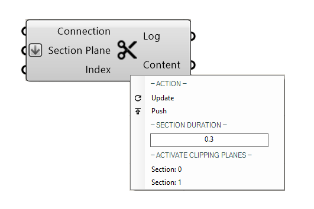

4. PublishSection¶
{kind=link}
This component is used to publish clipping planes from Rhino or directly from Grasshopper to a channel.
Video tutorials:
Input
Name |
Description |
Type |
|---|---|---|
Connection |
Link with the Connect component |
Connection |
Section |
Select A plane that will cut the model |
Plane/surfaces |
Index |
Select a plane from a list |
Number |
- Note:
- you can connect a number slider with "index" if you have connected a list of surfaces with the input: "Section Plane"- Rhino clipping planes are automatically imported and have to be selected in the menu below -Activate clipping planes-
Output
Name |
Description |
Type |
|---|---|---|
Log |
Documents changes & Data send |
Text |
Content |
Connect to Content |
RADii content |
Menu
Section Duration: |
how quickly the section is moving into place |
Set duration: |
toggle to have a moving clipping plane |
Activate clipping planes: |
clipping planes from rhino to be selected |
Note:
- In Rhino flipping a clipping plane is not recognized by Radii, rotating the plane by 180° however achieves the same
- Names of clipping planes are not carried over into the Grasshopper plugin at the time of writing